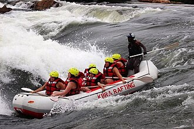
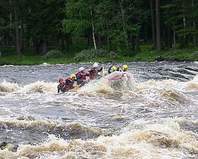
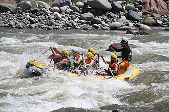
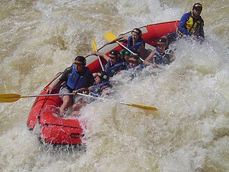
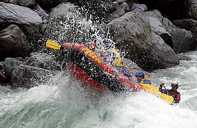
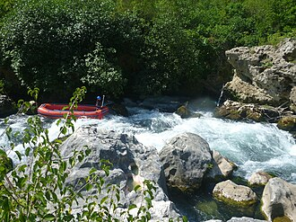

Nossa missão é proporcionar aventuras seguras, emocionantes e inesquecíveis, conectando pessoas à natureza e criando momentos que permanecem para sempre.

Nossa missão é proporcionar aventuras seguras, emocionantes e inesquecíveis, conectando pessoas à natureza e criando momentos que permanecem para sempre.
A Águas Bravas Rafting nasceu do desejo de compartilhar a emoção das corredeiras com aventureiros de todos os níveis. Desde a primeira expedição, buscamos oferecer experiências memoráveis em contato com a natureza.

Nossa equipe planeja cada passeio com foco na segurança, no respeito aos rios e na diversão. Queremos que cada pessoa volte para casa com boas lembranças e vontade de viver uma nova aventura.




